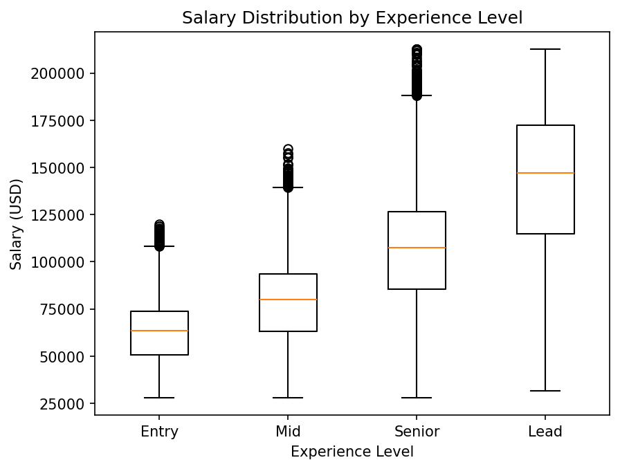
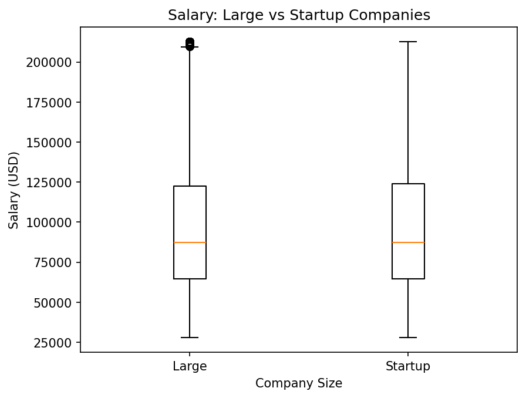
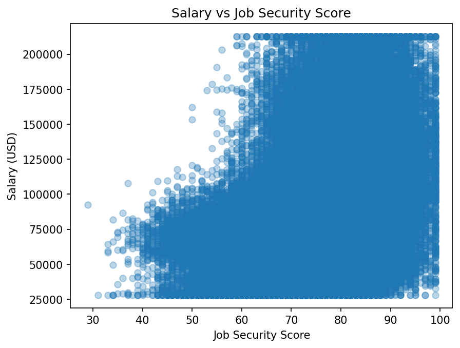

CMSC 320 · Fall 2024 Final Project Tutorial
| Member | Sections | 1–2 sentence summary |
|---|---|---|
| Grace Jagga | A, C | Brief summary of project idea and data exploration contributions. |
| Venya Goyal | B, D | Brief summary of dataset curation and ML design contributions. |
| Hansini Chokkalingam | E, G | Brief summary of ML training and final report creation. |
| Aabha Belsare | F, A | Brief summary of visualization work and project ideation. |
| Yasaswini Bommareddy | B, H | Brief summary of preprocessing and additional contributions. |
We chose this dataset because artificial intelligence and the workforce are relevant topics to us as college students, and this dataset has structured salary data on a global scale. The dataset includes important variables like experience level, company size, and remote work ratio, which could make for meaningful analysis over the course of this project. Analyzing this dataset could help with understanding entry-level roles that are in demand, and how experience plays a role in salary in the big scale tech industry.
import pandas as pd
df = pd.read_csv("global_ai_jobs.csv")
print(df.shape)
print(df.dtypes.value_counts())
print(df.isnull().sum().sum())
df.head()| id | country | job_role | ai_specialization | experience_level | experience_years | salary_usd | bonus_usd | education_required | industry | ... | vacation_days | skill_demand_score | automation_risk | job_security_score | career_growth_score | work_life_balance_score | promotion_speed | salary_percentile | cost_of_living_index | employee_satisfaction | |
|---|---|---|---|---|---|---|---|---|---|---|---|---|---|---|---|---|---|---|---|---|---|
| 0 | 1 | UAE | Machine Learning Engineer | Reinforcement Learning | Entry | 0 | 66465.0 | 5395 | Master | Automotive | ... | 27 | 12 | 76 | 57 | 65 | 73 | 15 | 55 | 1.23 | 76 |
| 1 | 2 | USA | AI Engineer | LLM | Entry | 1 | 75507.0 | 11713 | Bootcamp | Retail | ... | 27 | 54 | 29 | 69 | 60 | 51 | 15 | 58 | 0.87 | 67 |
| 2 | 3 | Brazil | Research Scientist | Analytics | Entry | 0 | 41660.0 | 5268 | PhD | Healthcare | ... | 13 | 12 | 49 | 70 | 59 | 68 | 37 | 13 | 2.13 | 61 |
| 3 | 4 | India | Software Engineer AI | Computer Vision | Senior | 6 | 43268.0 | 7975 | Diploma | Tech | ... | 30 | 80 | 47 | 79 | 65 | 55 | 46 | 74 | 1.49 | 56 |
| 4 | 5 | Germany | Machine Learning Engineer | Computer Vision | Entry | 0 | 69119.0 | 4758 | Master | Retail | ... | 24 | 82 | 47 | 64 | 52 | 69 | 17 | 21 | 0.87 | 72 |
5 rows × 35 columns
The dataset contains 90,000 rows and 35 columns. Of these, 18 are integer features, 9 are floats, and 8 are categorical object columns. A check for missing values returned 0, meaning the dataset is fully complete with no nulls to handle and no columns needed to be dropped.
categorical_features = df.select_dtypes(include=['object']).columns
for col in categorical_features:
print(f"{col}: {df[col].unique()}")| Column | Unique values |
|---|---|
| country | UAE, USA, Brazil, India, Germany, Japan, Australia, France, Singapore, Netherlands, Canada, UK |
| job_role | Machine Learning Engineer, AI Engineer, Research Scientist, Software Engineer AI, Data Analyst, Computer Vision Engineer, NLP Engineer, Data Scientist |
| ai_specialization | Reinforcement Learning, LLM, Analytics, Computer Vision, NLP, MLOps, Forecasting, Generative AI |
| experience_level | Entry, Senior, Mid, Lead |
| education_required | Master, Bootcamp, PhD, Diploma, Bachelor |
| industry | Automotive, Retail, Healthcare, Tech, Consulting, Telecom, Energy, Gaming, Education, Finance |
| company_size | Small, Large, Medium, Startup, Enterprise |
| work_mode | Remote, Onsite, Hybrid |
print(df['salary_usd'].describe())| Statistic | Value (USD) |
|---|---|
| Count | 90,000 |
| Mean | $96,331 |
| Std dev | $43,280 |
| Min | $28,000 |
| 25th percentile | $64,677 |
| Median | $87,544 |
| 75th percentile | $123,906 |
| Max | $212,750 |
The average salary across all roles and countries is $96,331. There is a wide spread with a standard deviation of $43,280, reflecting the diversity of roles, experience levels, and countries in the dataset. The salary range runs from $28,000 at the low end up to $212,750 at the top.
Extreme values were moderated using an inter quartile capping rule that replaces observations
lying beyond 1.5 times the IQR with the nearest boundary. This was applied to three key numeric columns:
salary_usd, bonus_usd, and weekly_hours.
def cap_outliers(df, col):
Q1, Q3 = df[col].quantile(0.25), df[col].quantile(0.75)
IQR = Q3 - Q1
lo, hi = Q1 - 1.5*IQR, Q3 + 1.5*IQR
n = ((df[col] < lo) | (df[col] > hi)).sum()
print(f"Outliers in {col}: {n}")
df[col] = df[col].clip(lo, hi)
return df
df = cap_outliers(df, 'salary_usd')
df = cap_outliers(df, 'bonus_usd')
df = cap_outliers(df, 'weekly_hours')| Column | Outliers detected | Action |
|---|---|---|
| salary_usd | 1,007 | Capped to IQR bounds |
| bonus_usd | 2,748 | Capped to IQR bounds |
| weekly_hours | 0 | No action needed |
After capping, the dataset retains all 90,000 rows. The salary_usd and bonus_usd
columns were converted from integer to float type as a result of the clipping operation. No rows were
dropped during preprocessing.
With the data cleaned, we ran three exploratory analyses to test which features carry signal
against salary_usd. Each one isolates a single variable so we can decide which
features are worth carrying forward into the modeling stage.
We grouped the data by experience_level, sorted the levels by mean salary, and
plotted the resulting distributions as a boxplot. This lets us compare not just the average pay
at each tier but also the spread and presence of outliers.
import matplotlib.pyplot as plt
mean_salaries = df.groupby("experience_level")["salary_usd"].mean()
sorted_levels = mean_salaries.sort_values().index
groups = [df[df["experience_level"] == lvl]["salary_usd"].dropna()
for lvl in sorted_levels]
fig, ax = plt.subplots()
ax.boxplot(groups, tick_labels=sorted_levels)
ax.set_title("Salary Distribution by Experience Level")
ax.set_xlabel("Experience Level")
ax.set_ylabel("Salary (USD)")
plt.show()
From the boxplot, salary increases with experience level, with medians ranging from around $65k for entry-level roles up to roughly $150k for lead roles. The spread of the data widens at higher levels, meaning senior and lead salaries are more variable in general. There are also notable outliers at each level, suggesting there are factors besides experience that influence salary.
Next we asked whether company size meaningfully predicts pay. We ran a two-sample t-test comparing salaries at large companies against startups, and visualized the two distributions side-by-side.
from scipy.stats import ttest_ind
large = df[df["company_size"] == "Large"]["salary_usd"].dropna()
startup = df[df["company_size"] == "Startup"]["salary_usd"].dropna()
t_stat, p = ttest_ind(large, startup)
print(f"T-statistic: {t_stat:.3f}, p-value: {p:.4f}")
# T-statistic: -0.866, p-value: 0.3867
plt.boxplot([large, startup], tick_labels=["Large", "Startup"])
plt.title("Salary: Large vs Startup Companies")
plt.xlabel("Company Size")
plt.ylabel("Salary (USD)")
plt.show()| Statistic | Value |
|---|---|
| t-statistic | −0.866 |
| p-value | 0.3867 |
| Significant at α = 0.05? | No |

From this two-sample t-test comparing salaries at large versus startup companies, there is no statistically significant difference (t = −0.866, p = 0.387). The boxplots confirm this visually since both groups have similar medians around $87k and similar spreads. This suggests company size is not a meaningful predictor of salary in this dataset, which is an important insight to consider when selecting features for the model.
For our continuous test, we computed the Pearson correlation between
job_security_score and salary_usd and plotted the relationship as a
scatter to see whether higher-security roles also tend to pay more.
from scipy.stats import pearsonr
corr, p = pearsonr(df["job_security_score"], df["salary_usd"])
print(f"Pearson r: {corr:.3f}, p-value: {p:.4g}")
# Pearson r: 0.434, p-value: < 0.0001
plt.scatter(df["job_security_score"], df["salary_usd"], alpha=0.3)
plt.title("Salary vs Job Security Score")
plt.xlabel("Job Security Score")
plt.ylabel("Salary (USD)")
plt.show()| Statistic | Value |
|---|---|
| Pearson r | 0.434 |
| p-value | < 0.0001 |

From this output, we can see there is a moderate positive correlation between job security score and salary. The Pearson r value is 0.434 (p < 0.0001), meaning higher job security comes with higher pay. This is statistically significant and visually confirmed by the upward trend in the scatter plot. This suggests that job security score is a meaningful feature that could influence salary prediction in further analysis.
Three takeaways from the EDA shape our modeling decisions. First, experience level is a clear ordinal predictor of salary and should be encoded as such. Second, company size on its own does not significantly predict salary, so we will only include it if it adds value in combination with other features. Third, job security score is the strongest single-variable signal we found, and will be a core feature in our regression model.
Based on what you found in EDA, pick a machine learning technique and explain why you chose it, how you trained it, and how you evaluated it.
Explain the results and insights of your primary analysis with at least one plot.
Wrap up: what did you learn, and what should the reader take away?